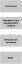

Reconstruction 3D
Last time,
we answered
to a first question.
How to merge
multiple scans?
Through registration,
all scans
are now
in the same coordinate frame.
Mission accomplished?
Not quite…
We only have
a cloud of points
bigger.
Without connectivity
No faces
Without surface
Just points.
Millions of points.
The surface
is not present
nowhere
in the data.
She must be…
inferred.
Yes but…
Why not just
triangulate?
🤔
And again, this is an ideal point cloud
But then…
How
reconstruct a surface
from
individual points?
Block 1
A point cloud
is ultimately nothing more
than a set
of samples.
But…
a surface may exist between the points.
The problem is
even more difficult
than registration.
Why?
Because there are
infinitely many surfaces
compatible
with the same points.
Which one should we choose?
We must find
the most likely
surface.
This step has
a name.
Surface Reconstruction
For more than
30 years
dozens of methods
have been proposed.
But…
they almost all follow
the same pipeline.
Block 2
We are looking for
to rebuild
a surface.
But…
with what information?
🧐
At first glance,
we do not own
only one piece of information.
The position
points.
Yet…
a cloud ☁️ of points
contains much more
only simple
contact details.
Some information
are directly measured.
- Position 3D
- Color
- Intensity
- Sensor position
- Ray direction
From
of these measures,
we can
calculate
new information.
😃
It all begins
by define
a neighborhood.

This neighborhood
already reveals the
local geometry.
For example,
we can estimate
a normal one.
For that,
we often perform
a
PCA
(Principal Component Analysis)
The PCA
provides
three directions
main.
Eigenvalues describe
the distribution of points.
\(\lambda_1 \gg \lambda_2 \approx \lambda_3\) Line
\(\lambda_1 \approx \lambda_2 \gg \lambda_3\) Surface
\(\lambda_1 \approx \lambda_2 \approx \lambda_3\) Volume
Normal
corresponds
to the eigenvector
partner
to the smallest
eigenvalue.
And with what size of neighborhood?

But the normal
is not
the only information
that can be estimated.
From the neighborhood,
we can also estimate
- Curvature
- Local density
- Main directions
- Neighborhood graph
- Local trust
Some information also comes from
of the acquisition process.
- Distance to sensor
- Angle of incidence
- Number of observations
The reconstruction
therefore does not simply involve
connecting
points.
It consists
to exploit all
information contained
in the cloud.
Each current method
uses combination
of this information
to find
the [most likely] surface {.green}.

But overall
it’s always
the same pipeline
Block 3
We now have
lots of information
on the cloud.
But…
how to find
the surface?
An idea
imposed itself
gradually.
Build
a continuous representation
of the scene.
In other words,
define
a fonction
throughout space.
The surface
then corresponds
at points
Or
\(f(x)=0\)
All the difficulty
is now
to build
this function.
First
approach
We build locally (1992)
First approach
historical and intuitive:
Build
the function
locally.
Hoppe (1992)
Each neighborhood defines
a approximation locale
of the function.
Second
approach
We build globally (2006)
Build
a function
overall.
All observations
contribute
simultaneously
to the same
function.
Fish Reconstruction (2006)
Here, the set of normals
is taken into account
to obtain a closed space
(watertight)
Third
approach
We no longer explicitly construct the function, we learn it (2020+)
Learn
directly
the function.
Neural SDF
Neuralangelo
The function
is no longer
defined
by rules,
but learned
from
data.
Whatever
the method,
we obtain
an implicit function.
It then remains
one last step.
Extract
the surface.
Marching Cubes
Marching Cube is a bit old (1987)
But remains, with its derivatives,
the method widely used today

Despite their differences,
all these methods
respond
to the same question.
What is
the surface
most likely?
Block 4
SO…
What method
is the best?
The answer is
None.
Each method
rests on
hypotheses
different.
According to the data,
some methods
will be
more suitable
than others.
For example…
- noise
- holes
- variable density
- fine details
- very large scenes
The choice also depends
of the application.
Visualization
Print 3D
Simulation
Metrology
Real time
In practice,
modern pipelines
often combine
several methods.
Pretreatment
Reconstruction
Cleaning
Simplification
Reconstruction
is ultimately
only one step
of the pipeline 3D.
The next question
is then
just as important.
What can we do
once
the reconstructed surface?
Understand
geometry.
Segmentation
Analysis
Interpretation
Conclusion
Today,
we answered
to a new question.
How to find
a surface from
of a point cloud?
We saw that
the reconstruction
is a problem
of inference.
The surface
is never
observed directly.
The different methods
are based on
hypotheses
different.
Local
Overall
Volume
Learner
There does not exist
no method
universal.
The choice depends
data
and application.
We now know
rebuild
a geometry.
But…
how to give him
meaning?
Next class:
Segmentation
Scene understanding 3D
That’s all for today